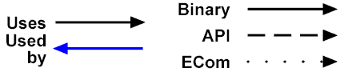

Dependencies System Info FilePurposeDependencies of various types can be provided via a system info file. This will allow the System Model to show mouse-over dependencies between components of a system model. Dependencies should only go between items of the same rank.
Dependencies are encoded in the System Info XML format using the Syntax<?xml version="1.0"?>
Each
On the system model, forward dependencies are show in black, and reverse dependencies in blue.
The arrowhead always points to the item it's dependent on, ie the one in 
Dependency arrows, colours and line styles can all be set using CSS in the
path.cr {
Copyright ©2009 Nokia Corporation and/or its subsidiary(-ies). All rights reserved. License: SFL
|